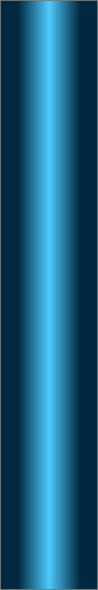
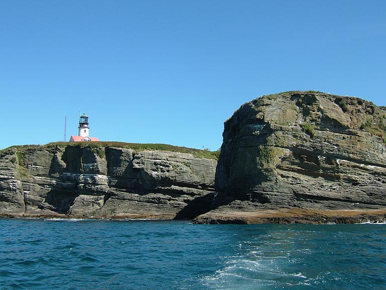
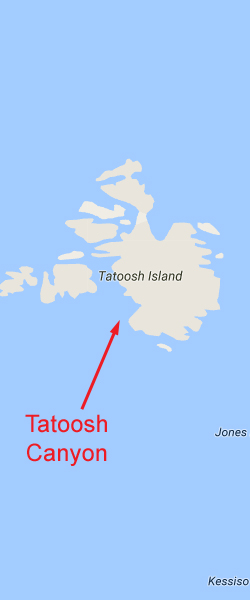

<!doctype html>
<html>
<head>
<meta charset="utf-8">
<title>Tatoosh Canyon</title>
<meta name="generator" content="WYSIWYG Web Builder - http://www.wysiwygwebbuilder.com">
<link href="Emerald_Diving.css" rel="stylesheet">
<link href="tatoosh_canyon_frame.css" rel="stylesheet">
<script>
function onChangeGoMenu2(){var a=document.getElementById('GoMenu2-select'),b=a.options[a.selectedIndex].value,c=a.options[a.selectedIndex].className;a.selectedIndex=0;a.blur();b&&(NewWin=window.open(b,c),window.NewWin.focus())};
</script>
</head>
<body>
<script>
var gaJsHost = (("https:" == document.location.protocol) ? "https://ssl." : "http://www.");
document.write(unescape("%3Cscript src='" + gaJsHost + "google-analytics.com/ga.js' type='text/javascript'%3E%3C/script%3E"));
</script>
<script>
try {
var pageTracker = _gat._getTracker("UA-15987748-1");
pageTracker._trackPageview();
} catch(err) {}</script>

<div id="container">
<div id="wb_Shape154" style="position:absolute;left:673px;top:655px;width:375px;height:2233px;z-index:3;">
</div>
<div id="wb_MasterPage1" style="position:absolute;left:0px;top:2px;width:1049px;height:62px;z-index:4;">
<div id="wb_Shape1" style="position:absolute;left:0px;top:5px;width:1049px;height:57px;z-index:0;">
</div>
<div id="wb_Text2" style="position:absolute;left:20px;top:5px;width:185px;height:16px;z-index:1;">
<span style="color:#FFFFFF;font-family:Arial;font-size:13px;"><em><a href="./local_sites_jf.html" target="_self">Return to Western Strait Map</a></em></span></div>
<div id="wb_GoMenu2" style="position:absolute;left:800px;top:5px;width:225px;height:25px;z-index:2;">
<form id="GoMenu2" role="menu">
<select id="GoMenu2-select" name="GoMenu2" onchange="onChangeGoMenu2()">
<option class="_self" value="#" selected>Select a Dive Site</option>
<option class="_self" value="./diamond_knot_frame.html" role="menuitem">Diamond Knot</option>
<option class="_self" value="./duncan_frame.html" role="menuitem">Duncan Rock</option>
<option class="_self" value="./mushroom_frame.html" role="menuitem">Mushroom Rock</option>
<option class="_self" value="./sekiu_frame.html" role="menuitem">Sekiu Jetty Rocks</option>
<option class="_self" value="./slant_frame.html" role="menuitem">Slant Rock</option>
<option class="_self" value="./stellar_frame.html" role="menuitem">Stellar Rock</option>
<option class="_self" value="./tatoosh_canyon_frame.html" role="menuitem">Tatoosh Canyon</option>
<option class="_self" value="./third_beach_frame.html" role="menuitem">Third Beach Pinnacle</option>
<option class="_self" value="./tiger_ridge_frame.html" role="menuitem">Tiger Ridge</option>
<option class="_self" value="./waadah_island_fingers.html" role="menuitem">Waadah Island Fingers</option>
</select>
</form>
</div>
</div>
<div id="wb_Text2" style="position:absolute;left:160px;top:568px;width:324px;height:14px;z-index:5;">
<span style="color:#000000;font-family:Arial;font-size:11px;">Double click to edit</span></div>
<div id="wb_Text1654" style="position:absolute;left:7px;top:1227px;width:477px;height:2px;z-index:6;">
&nbsp;</div>
<div id="wb_Image2" style="position:absolute;left:0px;top:58px;width:794px;height:594px;z-index:7;">
</div>
<div id="wb_Text3" style="position:absolute;left:22px;top:66px;width:527px;height:55px;z-index:8;">
<span style="color:#009300;font-family:Arial;font-size:48px;">Tatoosh Canyon</span></div>
<div id="wb_Text4" style="position:absolute;left:0px;top:671px;width:555px;height:2px;z-index:9;">
&nbsp;</div>
<div id="wb_Text5" style="position:absolute;left:0px;top:655px;width:661px;height:2217px;z-index:10;">
<span style="color:#FFFFFF;font-family:Arial;font-size:15px;"><strong>Topography: </strong>Two massive rock walls that form an expansive underwater canyon. The canyon floor is lined with boulder fields, rock formations, and a broken shell substrate. <br></span><span style="color:#FFFFFF;font-family:'Times New Roman';font-size:15px;"><br></span><span style="color:#FFFFFF;font-family:Arial;font-size:15px;"><strong>Cape Flattery marine life rating: </strong>5<strong><br></strong><br><strong>Cape Flattery structure rating: </strong>5<br><strong><br>Diving depth: </strong>80-95 feet<strong><br><br>Highlight: </strong>An incredible blend of interesting structure and robust marine life. One of the only sites where I regularly note orange peel nudibranchs. <br><br><strong>Skill level: </strong>Advanced <br><br><strong>GPS coordinates: </strong>N48° 23.379’&nbsp; W124° 44.267’<br><br><strong>Access by boat: </strong>Tatoosh Island is located northwest of Cape Flattery. This dive site is on the south side of Tatoosh Island. The canyon runs parallel to the island in an east-west direction. The southern edge of the canyon is marked by a couple of massive exposed and semi-exposed rocks that are typically topped with breaking surf. I gear up in the small bay to the west of the dive site that offers some protection from swell.<br><br><strong>Shore access: </strong>None<br><br><strong>Dive profile: </strong>This is another amazing Cape Flattery area dive site.&nbsp; Conditions at this site can&nbsp; vary dramatically from day to day. My buddies and I sometimes refer to this site as “Lottery” because we tend to either strike it big -- or end up with a busted dive.<br><br>Underwater visibility can be miserable in this area when the wind or swell is driving hard from the south or southwest. My first dive here was right after a storm that blew in from the south. I was greeted by 5 feet of visibility. Visibility is generally 20-40 feet and occasionally exceeds 50 feet when the swell and wind are from another direction.<br><br>I have started dives at the east and west ends of the canyon. I prefer to dive this site by gearing up in the small bay to the west of the dive site, then entering the water on the southeast corner of the bay by the big caves. I then descend the wall immediately east of the caves and follow the boulder field downslope to the south and slightly east. The boulder field gets deeper until it finally gives way to a broken shell and sand substrate in about 70 feet of water. The canyon floor is decorated with massive rock formations and yet more boulders. I continue south for about 50 yards to find the wall that marks the canyon’s south side. The western end of this wall comes to an abrupt stop and changes direction downslope to the south. This section of the wall is over 70 feet tall and is laden with fissures often occupied by resident giant Pacific octopus. If I end up in 85 feet of water with no wall in sight, I know that I missed the wall and head east in to find it.<br><br>Another option is to spend the dive in the canyon itself. When I want dive the canyon, I enter at the same point and head southeast. I meander across the rocky canyon floor in a southerly direction until I come across the canyon wall on the south side, then double back. <br><br>I end my dives by running the reverse course with the intent to make my way back to the protected bay on the south side of Tatoosh Island. I follow the structure to safety stop depths or find a tall strand of bull kelp to serve as an ascent line. <br><br><strong>My preferred gas mix: </strong>EAN 34 <br> <br><strong>Current observations: </strong><br><br><em>Current station: </em>Strait of Juan de Fuca Entrance<br><em>Noted slack correction: </em>None<br><br>I dive this site during on minor ebbs.&nbsp; The current heads east through this canyon at a precarious pace during a flooding tide.&nbsp; Regardless of the tide, I prefer to start my dive near the west end so I can fall back to the protection of the bay if strong current is present.&nbsp; If I encounter some current at the west end, I don’t cross the canyon and stay in the boulder field which provides some cover from the current.&nbsp; Also keep in mind I only dive this area during minor exchanges. <br><br>An enormous amount of water moves through this general area. A few of my diving buddies have refused to get in the water due to the cauldron of swirling water adjacent to the site. Swell is often breaking on the rocks that make up the south wall of the canyon. Strong current rips by the southeast corner of Tatoosh Island and often forms standing waves of two feet or larger. <br><br><strong>Boat launch:<br><br></strong>Neah Bay marina. Approximately 8 miles from the dive site.<br><strong><br>Facilities: </strong>None<strong><br><br>Hazards:<br><br></strong>Current: Strong current flows near this site, especially off-slack during major exchanges. Performing an emergency ascent beyond the protection of the outside canyon wall could result in getting swept away.<br><br>Swell: Large swell is likely in this area. Performing an emergency ascent by the southern wall can result in being beat against the rocks by heavy swell.<br><br>Semi-exposed rocks: A number of rocks lie just underneath the surface and pose serious danger to boats.<br><br>Exposure: This area is wide open to the south and offers little or no protection from swell or winds from that direction.<br><br><strong>Marine life: </strong>This site has it all - healthy, robust, and diverse invertebrates and fish.<br><br>This site offers ample movement of cool and nutrient rich waters, a solid footing, and adequate protection - key ingredients invertebrates need to grow real big. Huge colorful urticina and white spotted anemones are common throughout this site. Colonies of giant plumose anemones, large white nudibranchs and white lined dironas dot the rocks. Small colonies of sea strawberries flourish in this area. This is one of the few Washington dive sites where I regularly note orange peel nudibranchs, a species known to prey on sea strawberries. Hairy sea-squirts, rock scallops, staghorn hydrocorals, countless sponges, and numerous tunicates all vigorously compete for space on the rocky structure. Huge sections of this area are literally encrusted with so many different ascidians and hydroids that I wouldn’t even know where to start on categorizing them.&nbsp; At least one boulder near the bay is heavily encrusted with colorful strawberry anemones. <br><br>One of my most unusual dive experiences occurred at this site. While swimming west through the canyon, my buddy and I encountered several small pockets of 10 to 15 Dungeness crabs gathered at the base of boulders. Closer inspection revealed these crabs were actually carapaces that were discarded during the molting process. The number of the empty molts increased as we continued west. We started to see some live crabs in amongst the molts. As we proceeded with our dive, the number of crabs and carapaces quickly increased to cover the entire bottom. Live crabs eventually outnumbered empty carapaces. In some places the crabs were stacked on top of each other 6 layers deep. As I swam above the crabs, they moved like a river below me in an attempt to flee. All the crabs were large males that had just molted and were soft shelled.<br><br>Fish populations are dominated by black rockfish, but other fish are found in healthy abundance. China, blue, and yellowtail rockfish are all common. I note the odd tiger and juvenile yelloweye rockfish on occasion. Wolfeel encounters are a distinct possibility as countless potential lairs exist throughout this rocky habitat. <br><br>The shallows in the bay sheltered by Tatoosh Island are carpeted with thick growths of palm kelp with occasional long strands of bull kelp towering towards the surface. Black rockfish and kelp greenling often patrol the foliage.<br><br>If all this isnt enough, a great surface interval activity is to snorkel over to the caves when the swell permits. Colonies of fluorescent green surf anemones glow in the shallows when visibility is good. Areas of coralline algae and surf grass are found along the surf zone, which is prime rock greenling habitat. A small colony of goose neck barnacles clings to the sheer wall at the entrance of the southern-most cave. <br><br></span></div>
<div id="wb_Image1" style="position:absolute;left:797px;top:58px;width:244px;height:594px;z-index:11;">
</div>
<div id="wb_Image3" style="position:absolute;left:682px;top:681px;width:352px;height:262px;z-index:12;">
</div>
<div id="wb_Image4" style="position:absolute;left:682px;top:946px;width:352px;height:262px;z-index:13;">
</div>
<div id="wb_Image5" style="position:absolute;left:682px;top:1209px;width:352px;height:262px;z-index:14;">
</div>
<div id="wb_Image6" style="position:absolute;left:682px;top:1474px;width:352px;height:262px;z-index:15;">
</div>
<div id="wb_Image7" style="position:absolute;left:682px;top:1739px;width:352px;height:262px;z-index:16;">
</div>
<div id="wb_Text6" style="position:absolute;left:867px;top:689px;width:164px;height:16px;text-align:right;z-index:17;">
<span style="color:#FFFFFF;font-family:Arial;font-size:13px;"><em>Strawberry Anemones</em></span></div>
<div id="wb_Text7" style="position:absolute;left:883px;top:952px;width:150px;height:16px;text-align:right;z-index:18;">
<span style="color:#FFFFFF;font-family:Arial;font-size:13px;"><em>Sea Lemon Nudibranch</em></span></div>
<div id="wb_Text9" style="position:absolute;left:894px;top:1714px;width:139px;height:16px;text-align:right;z-index:19;">
<span style="color:#FFFFFF;font-family:Arial;font-size:13px;"><em>Gooseneck Barnacles</em></span></div>
<div id="wb_Text12" style="position:absolute;left:691px;top:662px;width:357px;height:15px;text-align:center;z-index:20;">
<span style="color:#FFFFFF;font-family:Arial;font-size:12px;"><em>Underwater imagery from this site</em></span></div>
<div id="wb_Image8" style="position:absolute;left:682px;top:2004px;width:352px;height:262px;z-index:21;">
</div>
<div id="wb_Text1432" style="position:absolute;left:693px;top:1982px;width:139px;height:32px;z-index:22;">
<span style="color:#FFFFFF;font-family:Arial;font-size:13px;"><em>Opalescent Nudibranch</em></span></div>
<div id="wb_Image9" style="position:absolute;left:681px;top:2269px;width:352px;height:262px;z-index:23;">
</div>
<div id="wb_Text1765" style="position:absolute;left:894px;top:2014px;width:139px;height:16px;text-align:right;z-index:24;">
<span style="color:#FFFFFF;font-family:Arial;font-size:13px;"><em>Urticina Anemone</em></span></div>
<div id="wb_Image10" style="position:absolute;left:682px;top:2534px;width:352px;height:262px;z-index:25;">
</div>
<div id="wb_Text11" style="position:absolute;left:685px;top:1217px;width:150px;height:16px;z-index:26;">
<span style="color:#FFFFFF;font-family:Arial;font-size:13px;"><em>Social Ascidians</em></span></div>
<div id="wb_Text8" style="position:absolute;left:889px;top:2285px;width:139px;height:32px;text-align:right;z-index:27;">
<span style="color:#FFFFFF;font-family:Arial;font-size:13px;"><em>Puget Sound King Crab</em></span></div>
<div id="wb_Text10" style="position:absolute;left:689px;top:2542px;width:139px;height:16px;z-index:28;">
<span style="color:#FFFFFF;font-family:Arial;font-size:13px;"><em>Deacon Rockfish</em></span></div>
<div id="wb_Text1" style="position:absolute;left:4px;top:2896px;width:1041px;height:36px;z-index:29;">
<span style="color:#009300;font-family:Arial;font-size:32px;">Composite Photography From Tatoosh Island</span></div>
<div id="wb_Image11" style="position:absolute;left:4px;top:2947px;width:760px;height:860px;z-index:30;">
</div>
</div>
</body>
</html>